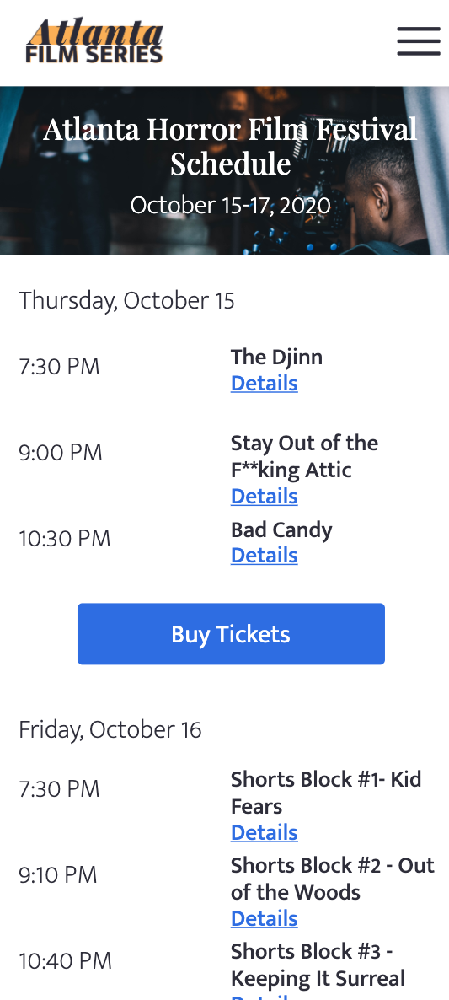

Responsive Web Design
Reimagining an event website as a mobile navigation tool
The Atlanta Film Series redesign included a new logo, navigation bar, and mobile responsiveness.
The Atlanta Film Series is an annual showcase of 4 unique festivals, with four different websites. These sites compete and do not serve the organization’s mission. My team and I redesigned the Atlanta Film Series website to reflect a more cohesive design language and function better on mobile devices. We worked together virtually through a shared Figma file, Google Drive folder, Github Repository, and Miro board. I quickly learned the best time to connect with each team member to communicate effectively and increase our productivity. We produced a mobile-responsive high-fidelity prototype that reimagined the Atlanta Film Series website as a tool for navigating both archived and current film festivals.
The redesign started with user research and ended with prototype testing. My team and I interviewed people who had been to a film festival or a similar event within the last year. Film festival attendees first visit an event's website to find the address and preview the event schedule. I designed the film festival schedule to perform quickly on a mobile device as I could expect a user to open the page for guidance during the event. On a desktop, the CSS hover pseudo-class highlights the time and director for each film. Both these designs exclude images on the main page to emphasize organization and decrease load time. If a user should want to learn more about a particular film, the detail page will include an image and summary.
Some changes my team and I made to the original website included a new logo, improved information
architecture, and a mobile hamburger menu. We updated the Atlanta Film Series logo with a more modern font and
a simplified color scheme. The addition of a hamburger menu (on mobile) introduced the site content to the
user through digestible dropdowns. Changes in typography indicated hierarchy. Our user testing verified this
menu as the preferred method for phone navigation. The functional prototype of the redesigned website
demonstrates the new website's advantages.
See the Prototype

On the desktop schedule, CSS hover indicates selection to click and view details for a film.

The film festival schedule in mobile includes film titles and times.